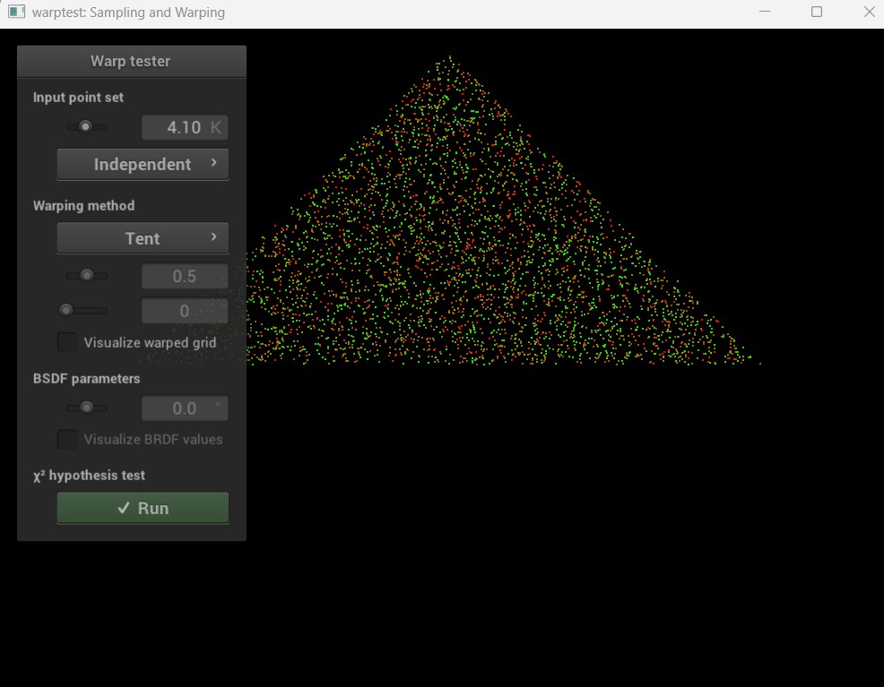
Triangle sampling
Transformation of uniformly distributed samples from a square domain to an isosceles triangular domain.
Advanced Rendering · C++ · Monte Carlo Methods · University Project
A progressive rendering project developed with the Nori framework, covering probability sampling, direct illumination, multiple importance sampling and recursive path tracing with global illumination.
This project was developed through three consecutive assignments, progressively extending a physically based renderer.
The first stage focused on probability distributions and sampling techniques. The second introduced direct illumination from area lights and Multiple Importance Sampling. The final stage implemented recursive path tracing, indirect illumination, Russian roulette and Next Event Estimation.
The first stage implemented mappings from a uniform square distribution to different target domains, including triangular and hemispherical distributions.
Each sampling method was paired with its corresponding probability density function and validated through statistical tests.

Transformation of uniformly distributed samples from a square domain to an isosceles triangular domain.
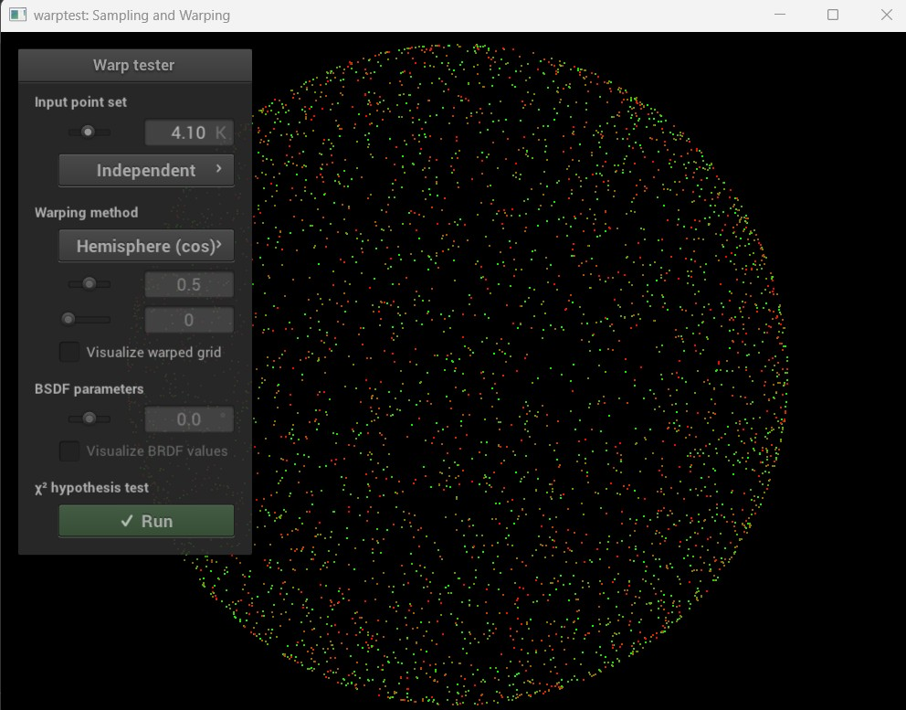
Samples are concentrated around the normal direction according to a cosine-weighted probability distribution.
A direct illumination integrator was implemented to evaluate light transport between surfaces and area emitters.
Increasing the number of samples per pixel progressively reduces variance and produces cleaner shadows and smoother illumination.
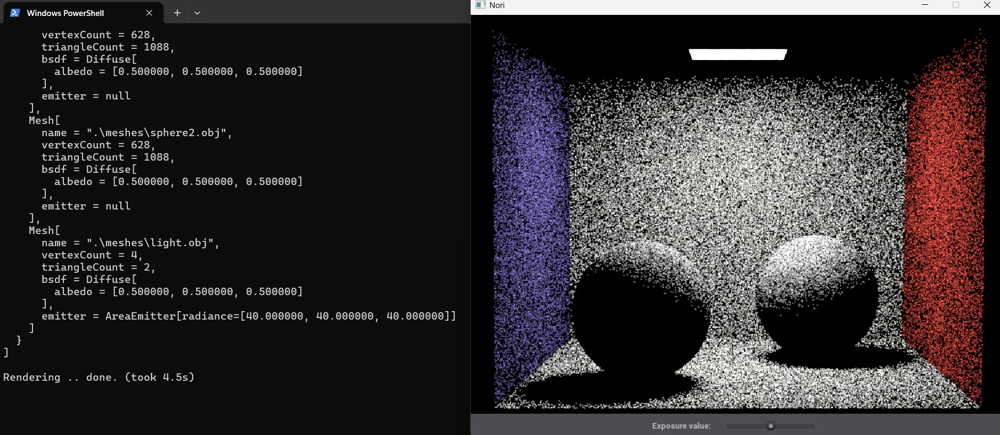
The first approximation contains visible Monte Carlo noise, especially in shadows and indirectly illuminated areas.
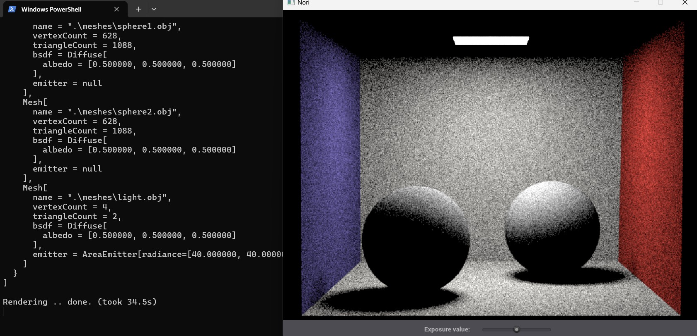
A higher sample count produces a more stable and visually converged result.
The renderer was extended to sample area lights directly. Emitters were selected according to a probability distribution weighted by their radiance and surface area.
Multiple Importance Sampling combines light sampling and BSDF sampling, weighting both strategies to reduce variance under different lighting and material conditions.
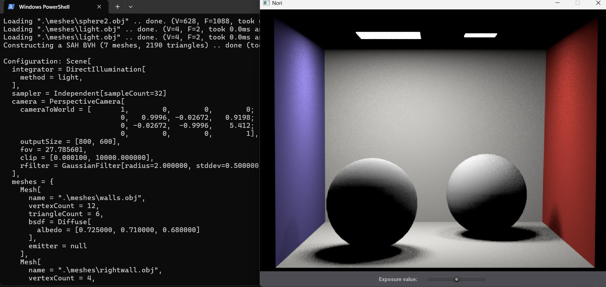
Directly sampling the emitters improves convergence in scenes with diffuse materials and area lights.
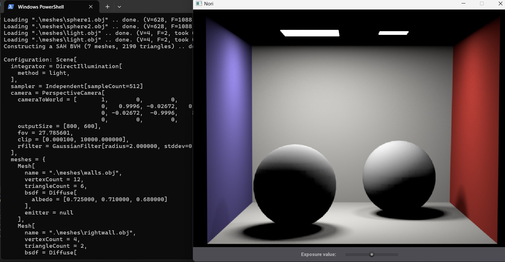
Increasing the sample count produces smoother shadows and a cleaner illumination result.
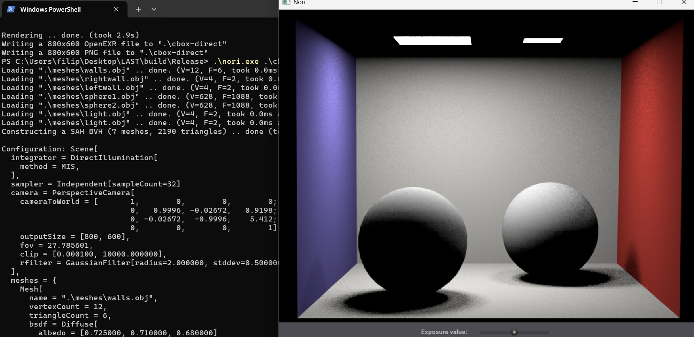
Light sampling and BSDF sampling are combined through balance heuristics to select the most effective contribution.
The standard path tracer recursively follows directions sampled from the material BSDF. Light is accumulated when a path eventually reaches an emitter.
This approach produces physically meaningful indirect illumination, but it converges slowly when the probability of reaching a light source is low.
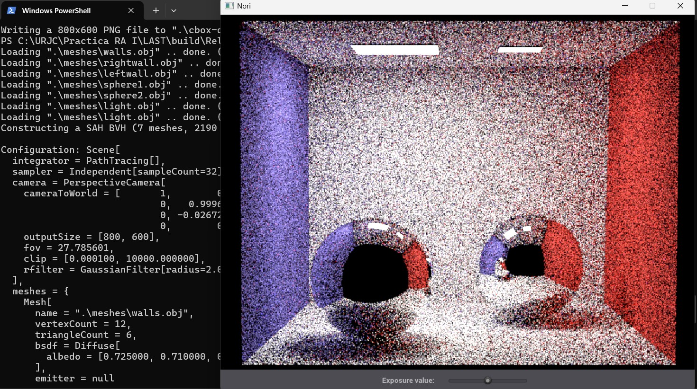
Strong variance is visible because light sources are only found through random recursive paths.
The NEE integrator generates a direct-light sample at every diffuse bounce while continuing the recursive indirect path.
This strategy reduces noise considerably because the renderer does not rely exclusively on random paths to reach a light source.
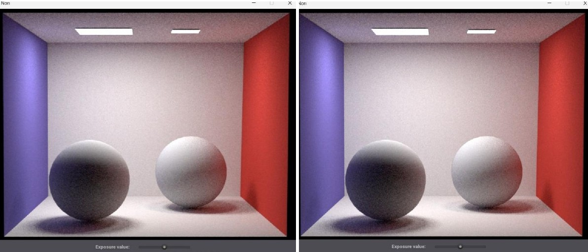
Comparison between different maximum path depths. After several indirect bounces, the increase in illumination becomes progressively smaller and the result stabilizes.
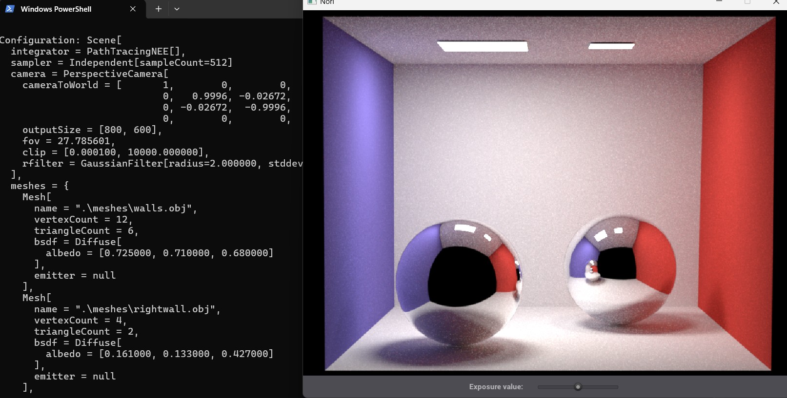
Direct and indirect illumination are combined to achieve a cleaner and more stable result.
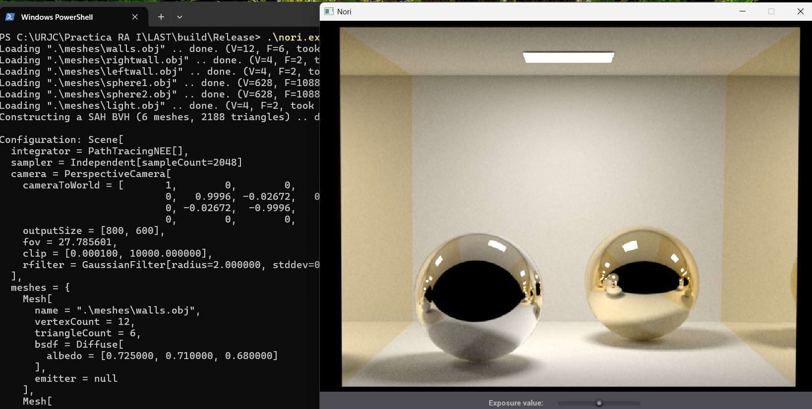
The final implementation supports recursive light transport and reflective materials, producing complex reflections and global illumination.
The project was developed by extending the Nori educational rendering framework. The complete source code is not publicly distributed because it contains solutions to university assignments. This page focuses on the implemented techniques, experimental comparisons and final visual results.